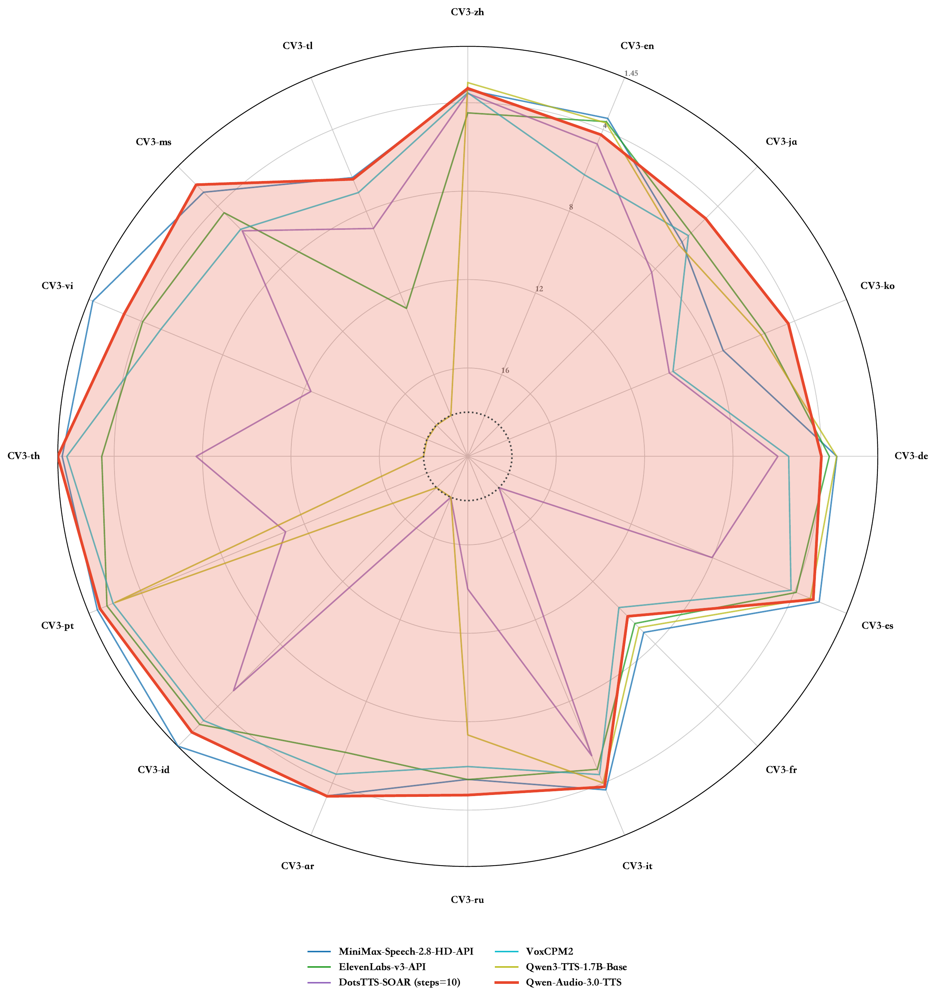
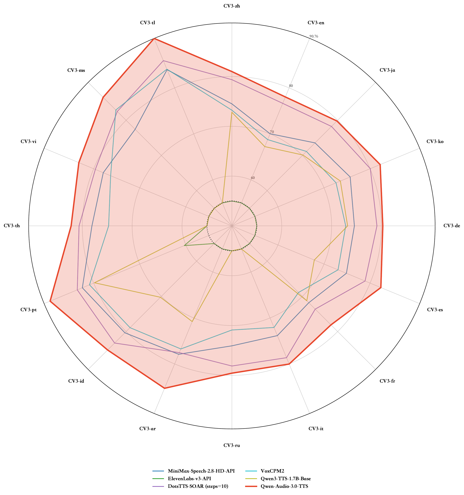

Abstract: In this paper, we present Qwen-Audio-3.0-TTS, a production-oriented speech synthesis system that jointly advances content consistency, speaker similarity, prosodic naturalness, audio quality, controllability, multilingual coverage, efficiency, and robustness. It combines a 12.5 Hz low-frame-rate speech tokenizer for reduced inference latency with a five-stage progressive training paradigm for coordinated LM and FM optimization. The model provides production-level control through free-style natural-language instructions and fine-grained inline tags, while supporting 16 languages, 20 Chinese dialect regions, one-pass long-form synthesis up to 3 minutes, and robust generation from noisy, reverberant, or unclear reference speech. Across SEED-TTS-Eval, CV3-Eval, instruction-following, long-form, and acoustic-robustness evaluations, Qwen-Audio-3.0-TTS achieves state-of-the-art performance on many reported dimensions or the strongest aggregate results. It also ranks first on the independent Artificial Analysis Text-to-Speech Leaderboard. These results establish Qwen-Audio-3.0-TTS as a strong foundation for production-level speech synthesis.
Key Contributions:
- Low-frame-rate speech tokenizer: A 12.5 Hz supervised speech tokenizer reduces autoregressive decoding cost while retaining content and speaker information.
- Progressive training paradigm: The training pipeline combines independent LM and FM pretraining, joint training with high-quality data annealing, LM reinforcement learning, FM robustness training, and FM reinforcement learning to improve content consistency, prosodic naturalness, voice fidelity, perceptual quality, and robustness.
- Production-grade controllability: The model interprets free-style natural-language instructions describing role, emotion, speaking style, rate, timbre, and accent. In parallel, 86 newly added fine-grained inline tags enable localized control at phrase and word level, including expressive transitions and non-verbal events such as laughter, breathing, coughing, and sighing.
- Broad and robust deployment coverage: The model supports 16 languages, seven of them newly added, and 20 Chinese dialect regions; it handles hard text-normalization cases, one-pass synthesis up to 3 minutes, and degraded prompts without an explicit denoising mode. A reproducible speaker fine-tuning protocol and vocoder super-resolution further support target-voice adaptation and 48 kHz output.
- Comprehensive evaluation: We evaluate zero-shot voice cloning, multilingual and cross-lingual synthesis, free-style instruction following, fine-grained control, text normalization, long-form generation, adverse-prompt robustness, and dialect synthesis through objective benchmarks and arena-style human evaluation.

Content Consistency

Speaker Similarity
Contents
Zero-shot In-context Generation
| Language | Prompt | Text | CosyVoice 3.0-0.5B | CosyVoice 3.0-1.5B | Qwen-Audio-3.0-TTS |
|---|---|---|---|---|---|
| ZH | 某些此类应用程序甚至让用户把智能手机对着现实世界中的标志或其他物体，就能翻译上面的外语文字。 | ||||
| EN | Since then, the Brazilian has featured in 53 matches for the club in all competitions and has scored 24 goals. | ||||
| HARD-ZH | 板凳宽，扁担长，板凳比扁担宽，扁担比板凳长，扁担要绑在板凳上，板凳不让扁担绑在板凳上，扁担偏要板凳让扁担绑在板凳上。 | ||||
| HARD-EN | Oh, no! I left my keys—again?! What am I going to do...call a locksmith? |
Multilingual / Minority Languages
Zero-shot voice cloning across 14 languages.
| Language | Prompt | Text | CosyVoice 3.0-0.5B | CosyVoice 3.0-1.5B | Qwen-Audio-3.0-TTS |
|---|---|---|---|---|---|
| JA | この種の人は論理的思考力に富み、パターンを記憶したり、問題を解決したり、科学的なテストに取り組んだりできます。 | ||||
| KO | 학교는 교육과정을 자의적으로 운영하거나 학생에게 임의적인 교내외 행사 참석을 강요하여서는 아니 된다. | ||||
| DE | Die häufigste Unfallursache im Winter sind rutschige Straßen, Gehwege (Bürgersteige) und vor allem Stufen. | ||||
| ES | Además pueden encontrarse varias especies más de robles de porte arbustivo en esta región. | ||||
| FR | De nos jours, les ordinateurs sont utilisés pour modifier des photos et des vidéos. | ||||
| IT | È stata cancellata dopo la prima stagione. | ||||
| RU | Посещение этого места можно удобно совместить с лодочной прогулкой по озеру. | ||||
| — The languages below are newly supported in Qwen-Audio-3.0-TTS and are not supported by CosyVoice 3.0. — | |||||
| AR | الوحدة المختارة تمنح فرصة للتأمل واستعادة التوازن الداخلي المفقود. | — | — | ||
| ID | Periksa kesehatan rutin setahun sekali deteksi dini penyakit kronis sebelum parah. | — | — | ||
| PT | Nossa série sobre artesanato tradicional apresenta hoje os mestres ceramistas do Vale do Jequitinhonha, que transformam o barro em verdadeiras obras de arte. | — | — | ||
| TH | ความเคารพผู้ใหญ่คือมารยาทไทยควรสืบทอด | — | — | ||
| VI | Thiên nhiên chữa lành tuyệt vời nếu ta chịu bước chậm và lắng nghe tiếng gió. | — | — | ||
| MS | Rancangan ini pada asalnya menampilkan pelakon suara amatur tempatan Texas Timur. | — | — | ||
| TL | Ngayon, ang tanging mga insekto na hindi maitupi ang kanilang mga pakpak ay mga tutubi at mga mayfly. | — | — | ||
Cross-lingual In-context Generation
Same prompt voice reading different target languages (0-shot) — listen whether the timbre stays consistent across languages.
| Prompt | Target | Text | Qwen-Audio-3.0-TTS |
|---|---|---|---|
| ZH prompt 加菲迪曾经代表巴西国家足球队。 |
→ EN | Many Christians are well-educated, but cannot rise to positions of responsibility. | |
| → JA | 歴史的世界においては、過去は単に過ぎ去ったものではない、プラトンのいう如く非有が有である。 | ||
| → KO | 가을철 들면서부터 덕호는 읍의 출입이 잦아졌다. | ||
| EN prompt The log file reveals that nobody ever read the end user license agreement during installation. |
→ ZH | 瓦尔韦尔迪是葡萄牙布拉干萨区的一个堂区。 | |
| → JA | 病床の母親が、だれかに手紙の代筆を頼む。 | ||
| → KO | 선비는 씨아틀도 만지지 않으면 앞이 허전한 것 같아서 그냥 붙들고 있었다. |
Emotional Voice Generation
| Emotion | Prompt | Text | CosyVoice 3.0-0.5B | CosyVoice 3.0-1.5B | Qwen-Audio-3.0-TTS |
|---|---|---|---|---|---|
| Happy · EN | I just realized my daughter has started teething! I’m so happy and excited! | ||||
| Disgusted · EN | I really can't take it anymore! Every time we have a meeting, you keep interrupting everyone—it’s so rude! | ||||
| Surprised · EN | Rede Globo's website and a Globo-owned pay-per-view channel offer round-the-clock coverage. | ||||
| Angry · EN | Stop acting like such special snowflakes. | ||||
| Fearful · EN | Did you see that shadow? Am I dreaming? I really can't bear to look anymore! | ||||
| Happy · ZH | 我家宝宝蹦蹦跳跳像个小兔子一样,真是好可爱啊。 | ||||
| Angry · ZH | 您甭哭了行吗，别再一吵架您就跟我说这个行吗？ | ||||
| Surprised · ZH | 在采访中表示这可能是她最后一次参与国庆阅兵庆祝演出。 | ||||
| Sad · ZH | 但他对盐酸的研究说明拉瓦锡关于所有的酸都含有氧的看法是错误的。 |
Chinese Dialect Voice Generation
Zero-shot voice cloning across 20 Chinese regional dialects (dialect timbre replication).
| Task / Dialect | Prompt | Text | Qwen-Audio-3.0-TTS |
|---|---|---|---|
| 重庆话 | 大热天的空调坏了，打电话给售后一直喊我等，屋头热得像蒸笼，我人都快遭烤干了。 | ||
| 东北话 | 咱给大舅捎点啥礼啊？整两瓶好酒呗，要不空手去多丢份儿啊，让人笑话。 | ||
| 甘肃话 | 这主播说得天花乱坠，我都让他给忽悠迷糊了。看着是不错，我也下单买一个试哈。 | ||
| 粤语 | 乜部手机又窒下窒下噉嘅？揿嚟揿去都冇反应，真系迟早畀佢激死！ | ||
| 贵州话 | 这个中药抓来苦得造孽，但是为了身体，还是只有硬撑起喝。哎，喝完快点吃颗糖。 | ||
| 河北话 | 给别人打工总是不自由。我把工作辞了，自个儿当掌柜，好歹能混口饭吃。 | ||
| 河南话 | 赶紧瞅瞅这满减券，拼单买才最划算！省下嘞钱还能给娃买箱奶，真不赖！ | ||
| 湖北话 | 方案又被毙了，老板到底晓不晓得自己要么事？天天改来改去，真叫人脑壳疼。 | ||
| 湖南话 | 哎呀，何解突然间停电哒咯？我冷水澡洗了一半，一身的肥皂泡泡，硬是造孽死人去！ | ||
| 江西话 | 隔壁王大娘介绍了个毛丫头，下昼一道喝茶。你看我着个身衣裳要得不？ | ||
| 宁波话 | 蹲勒海整整一日天，连条鱼毛都勿曾看见。光吹冷风，肚皮饿煞，真真触霉头。 | ||
| 宁夏话 | 影城里头全是人，挨肩擦背的挤都挤不动。早知道不今儿凑热闹了，真是受苦！ | ||
| 青岛话 | 恁几个晚上干么气？要不凑个局打场够级吧，俺跟老王当联邦，绝对把恁打趴下。 | ||
| 山东话 | 昨晚上一激动，净买些不顶用的东西。这下可好，钱包空咧，下半月只能喝西北风。 | ||
| 山西话 | 双十一买了一堆用不着的甚，拆快递拆得我手疼。看着账单真想剁手，下回可不敢恁个乱花钱咧。 | ||
| 陕西话 | 绿得人都心慌咧，最近买那基金跌得一塌糊涂。往后可嫑瞎折腾咧，还是把钱存着稳当。 | ||
| 上海话 | 今朝银行扣房贷了，每个月工资大半侪拨了伊拉。迭个日子阿里一天是个头啊？ | ||
| 四川话 | 天天加班，身体硬是吃不消。干脆辞职算了，自己开个面馆当老板，还自由些。 | ||
| 云南话 | 又要写年终总结啦，脑壳大得扎实。今年也没整出什么名堂，真不晓得怎么编。 | ||
| 杭州话 | 你格个操作真个是作孽，表去送了。赶紧抱我大腿，带你赢一把。 |
Acoustic Robustness
Robust synthesis under noisy / reverberant / unclear (telephone-band, high-frequency cut) prompts.
| Condition | Prompt | Text | CosyVoice 3.0-0.5B | CosyVoice 3.0-1.5B | Qwen-Audio-3.0-TTS |
|---|---|---|---|---|---|
| noisy · en | If I could travel through time, I would visit this street two hundred years ago. I would watch shops open with different signs and listen to older speech. I want to understand what hopes filled those forgotten hearts. | ||||
| noisy · en | Have you seen the new show at the art museum? I heard it is worth visiting. | ||||
| noisy · en | Imagine a world where animals could speak and share their wisdom with us. | ||||
| noisy · en | The water cycle moves water from oceans to clouds, then to land as rain or snow, and finally back to the sea through rivers. This cycle has continued for millions of years. | ||||
| noisy · en | Growing older has taught me that happiness is not a destination but small moments. A warm cup of tea, a genuine laugh, a hand to hold. | ||||
| noisy · zh | 国产新型高速列车完成试运行测试。最高时速突破四百公里，安全性能指标均达到设计标准。 | ||||
| noisy · zh | 帆船在平静的海面上缓缓移动，白色的帆被夕阳染成了金色。船员们站在甲板上，沉默地望着远处逐渐清晰的海岸线。 | ||||
| noisy · zh | 海上搜救中心接报后立即派出多艘船只前往事发海域。经过数小时紧张搜寻，落水人员全部获救。 | ||||
| noisy · zh | 火山喷发时会释放出大量的岩浆、气体和火山灰。这些物质既能破坏周边环境，也能让土壤变得更加肥沃。 | ||||
| reverb · en | I want to propose a simple idea. What if everything you think you know about success is actually a description of burnout? I believe those who change the world know when to step away. | ||||
| reverb · en | She walked into the audition room and took a breath so deep it reached her toes. The pianist played. And then she sang, not for them, but for the girl she had been at twelve. | ||||
| reverb · en | The community garden was an unlikely success. It started with one woman planting tomatoes in a vacant lot. Within a year, twenty families grew food. Within two years, it had compost and a tool library. | ||||
| reverb · zh | 本市地铁三号线将于下月正式开通运营。 | ||||
| reverb · zh | 如果地球上的时间突然静止了，你会选择去做一件什么平时不敢做的事情呢？ | ||||
| reverb · zh | 雨后的古镇青石板路被洗得发亮，两旁的木质阁楼挂着红灯笼，小河上飘着几艘乌篷船，船娘摇着橹。 | ||||
| reverb · zh | 做红烧肉要选肥瘦相间的五花肉，冷水下锅焯水，然后用小火慢炖至少一个小时。 | ||||
| reverb · zh | 如果我可以设计一个理想的城市，我会让每条街道都种满不同季节开花的树，春天樱花夏天紫薇秋天桂花冬天腊梅。 | ||||
| unclear · en | Yesterday I went to the bookstore and spent nearly two hours browsing the shelves before finding a novel that caught my interest. | ||||
| unclear · zh | 晨光透过老图书馆的高窗洒进来，在抛光木地板上投下长长的影子，整个房间都金灿灿的。 | ||||
| unclear · zh | 我在想换个新手机，但是实在选不出来买哪款，你有什么推荐的吗？ |
Long-text Generation
Continuous long-passage reading in Chinese and English.
| Language | Prompt | Text (excerpt) | CosyVoice 3.0-0.5B | CosyVoice 3.0-1.5B | Qwen-Audio-3.0-TTS |
|---|---|---|---|---|---|
| EN | As she passed through the crowd of squires and yeomen who already filled the lower end of the vast apartment a scrap of paper was thrust into her hand which she received almost unconsciously and continued to hold without examining its contents. The assurance that she possessed some friend in this awful assembly gave her courage to look around and to mark into whose presence she had been conducted. She gazed accordingly upon a scene which might well have struck terror into a bolder heart than hers. On an elevated seat at the upper end of the great hall directly before the accused sat the grand master of the temple in full and ample robes of flowing white holding in his hand the mystic staff which bore the symbol of the order. At his feet was placed a table occupied by two scribes whose duty it was to record the proceedings of the day. Their chairs were black and formed a marked contrast to the warlike appearance of the knights who attended the solemn gathering. The preceptors of whom there were four present occupied seats behind their superiors and behind them stood the esquires of the order robed in white | ||||
| ZH | 天色渐渐暗下来的时候，我把最后一件旧毛衣叠好，轻轻放进那只褪色的帆布包里。门锁轻轻一扣，楼道的灯光跟着亮了又灭，像极了这些年里头起起落落的日常。我站在台阶上深吸了口气，冷空气顺着鼻腔往里钻，带着点泥土与枯叶的腥气。其实心里头早就有了准备，只是真到了要转身的那一刻，脚步还是忍不住慢了半拍。风掠过树梢发出沙沙的响动，像是在劝我别回头。我知道这一走，有些人就再也碰不着了，可生活原本就是这样，聚散从来不讲道理，只能顺着岁月的河水流向该去的地方。 往前走的时候，脑海里不断闪过些零碎画面，那间住了好多年的小屋，窗台上总是晒着半干的衣裳，厨房的排烟罩一到做饭时分就会嗡嗡作响。那时候总觉得日子长得很，怎么熬也熬不到头，如今真要离开了，反倒觉得光阴像手里的细沙，攥得越紧漏得越快。我伸手摸了摸口袋里那张没带走的旧车票，纸边已经起了毛。其实送行的人并不多，大家都默契地没有多问什么，只说了句保重。我也学着他们的样子笑了笑，把那些没说出口的牵挂都咽进了肚子里。人嘛，总要学会一个人把情绪消化掉，等到夜深人静的时候再慢慢拿出来晾干。 拐过街角，远处的路灯渐渐亮起来，映在潮湿的地面上泛起一层柔和的光晕。 |
Text Normalization (TN)
Correct reading of numbers / abbreviations / symbols / named entities.
| Language | Prompt | Raw text | CosyVoice 3.0-0.5B | CosyVoice 3.0-1.5B | Qwen-Audio-3.0-TTS |
|---|---|---|---|---|---|
| EN | Sales promo: Buy 3 items, get Chapter XII free! | ||||
| EN | The shadow puppet show begins promptly at 19:30 and ends at 21:15. | ||||
| EN | Ventilation rate must stay between 0.85 and 1.25 air changes per hour. | ||||
| EN | Grant awarded: €1.2M for cryo-EM infrastructure | ||||
| EN | The grant covers $12K for lab materials and $3.5M for equipment. | ||||
| EN | Stir gently until pH = 7.0 ± 0.2, then cap. | ||||
| ZH | 今日体测数据：静息心率62.4次/分，体脂率18.7%，深蹲最大负重95.3公斤，跑步机耐力测试成绩12.8分钟。 | ||||
| ZH | 置信区间估计中，μ的95%CI为12.3～15.7，σ²的90%CI是8.1—11.4，而p值范围设为0.01→0.05。 | ||||
| ZH | 本次支付成功率对比：微信 97:3，支付宝 96:4，云闪付 95:5，三者比例差异需重点关注。 | ||||
| ZH | 固件升级包已发布，兼容版本号v1.8.3与v2.1.0，需确认设备当前运行build 7892。 | ||||
| ZH | 特种设备检验员需持TSG Z8002证书上岗，现场须佩戴N95口罩及PPE防护装备。 | ||||
| ZH | 本次实验中，样品A的纯度为99.95%，样品B含杂质1.2‰，两者差值达98.75%。 |
Instructed Voice Generation
Natural-language instructions controlling emotion / pace / volume / character / context.
| Instruction | Prompt | Text | Qwen-Audio-3.0-TTS |
|---|---|---|---|
| Say this in a slow, calming voice. | Please take a deep breath in through your nose. Now, slowly exhale through your mouth. Feel the tension leaving your body with each breath. | ||
| Sadly, read the following. | I visited our old park bench today. Everything looked the same, but it felt so empty without you here beside me. I really miss the conversations we used to have right in this spot. | ||
| Say the following in shock. | Wait a second... is that a real diamond ring? Are you proposing to me right now? Oh my gosh, I'm in complete shock. I don't know what to say! | ||
| Say this quickly, like you're in a hurry. | Hurry up! The train is about to leave the station. We need to run to catch it or we'll miss our trip entirely. Let's go now! | ||
| Speak with revulsion, as if describing a filthy location. | I can't stay here another minute. This place is filthy! There's grime on every single surface. It's just disgusting. | ||
| {"speed": "fast", "volume": "loud", "rhythm": "urgent"} | Go, go, go! We are running out of time! Faster! Don't look back, just keep moving forward now! | ||
| Read this with a tone of happy, disbelieving shock. | Wait, she's having twins? I had absolutely no idea! Wow, that is truly incredible news. I'm so happy for her. | ||
| Speak with a tone of amazed coincidence. | You're Sarah's cousin from out of town? What a small world! I was just talking about her yesterday. This is amazing. | ||
| Read this with a sharp, commanding tone, demanding respect. | I will not be spoken to like that. You need to show some respect. This conversation is over until you can be civil. | ||
| Say this as a neutral, uninterested observation. | The sky is gray again today. I suppose it might rain later. Or it might not. We'll see. | ||
| 请用充满遗憾和悲伤的语气朗读。 | 如果当初我能再勇敢一点，是不是现在就不会是这个结局了？可惜没有如果。 | ||
| 角色：女性早间电台音乐节目主持。场景：节目开场，气氛活泼但克制。风格：清亮、有亲和力、节奏轻盈。语速：偏快。请按以上设定朗读下面这段开场。 | 早上好啊各位听众，欢迎回到今天的早间频道。今天我们要聊一个特别有意思的话题，但是先别急，让我们从一首老歌开始这个清晨。 | ||
| 请用温柔、缓慢的语速，像讲睡前故事一样朗读。 | 孩子，睡吧。月亮婆婆已经出来了。窗外的风轻轻地吹，像在唱着摇篮曲。 | ||
| 请用愤怒和质问的语气朗读。 | 我那么信任你，你竟然在背后这样说我？你把我们的友谊当成什么了！ | ||
| 请用轻松愉快的心情朗读。 | 新年快乐！外面好热闹啊，到处都是烟花和笑声。希望新的一年我们都顺顺利利的。 | ||
| {"affect": "fearful", "speed": "hesitant", "volume": "low and shaky"} | 那…那是什么声音？好像是从地下室传来的。你听到了吗？我们，我们还是别过去了吧。 | ||
| 请模仿赶时间的样子，用很快的语速说出这段指路的话。 | 时间来不及了，你听我说完。先出门左转，看到那个红绿灯再右转，直走两百米就到了，别走错了！ | ||
| 新闻播报节奏，咬字清楚，地名与数字处放慢，气息均匀 —— 朗读一段早间天气新闻。 | 各位观众早上好，欢迎收看早间天气预报。预计今天白天，北京和天津等华北地区将迎来大风降温，最高气温降至12度。而江南中南部、华东大部则有小到中雨，出行请注意防风防雨。 | ||
| 一位女性培训师在工作坊里带领学员做一个团队沟通练习，语气活泼有亲和力，节奏控制得好，能调动现场氛围。 | 下面我们做一个小练习。两两一组，A 同学先说三句话，B 同学只需要听不需要回应。三分钟之后我们交换，最后我们一起分享听到了什么。 |
Fine-grained Tags
Inline tags controlling pause / breath / stress and other fine-grained articulation.
| Language | Prompt | Tagged text | Qwen-Audio-3.0-TTS |
|---|---|---|---|
| ZH | [excited] 哇！快看外面的雪！ 积雪已经有十几厘米厚了，我们赶紧下楼去堆雪人、打雪仗吧！ | ||
| ZH | [panicked] 闪开！快闪开！ 后面的卡车刹车失灵了，大家赶紧往人行道上跑，快啊！ | ||
| ZH | [excited] 我们的新歌终于冲上音乐榜单第一名了！ [laughing] 感谢所有粉丝的支持，我们做到了！ | ||
| ZH | [amazed] 我的天呐！这幅壁画居然是千年前的古人手工绘制的！历经千年的风雨，色彩居然还能保持得如此鲜艳夺目！ | ||
| EN | I thought the machine was broken, [laughing] but it was only waiting for someone to press the green button. | ||
| EN | [sarcastic, speaking slowly] Yes, because stacking wet boxes on top of antique documents was clearly a brilliant storage plan. | ||
| EN | [mischievously] [giggles] I may have replaced every office pen with one that writes in glitter, but I refuse to call it a crime. | ||
| EN | [angry] I told you three times to lock the side door, and now the entire shipment is sitting in the rain. |
Disclaimer
The content provided above is for academic purposes only and is intended to demonstrate technical capabilities. Some examples are sourced from the internet. If any content infringes on your rights, please contact us to request its removal.